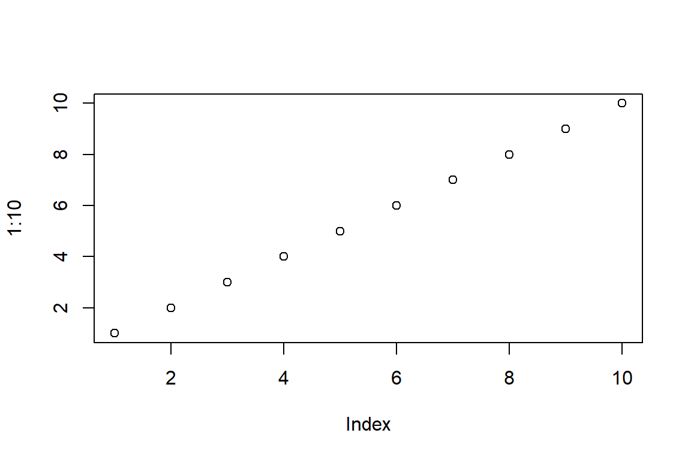
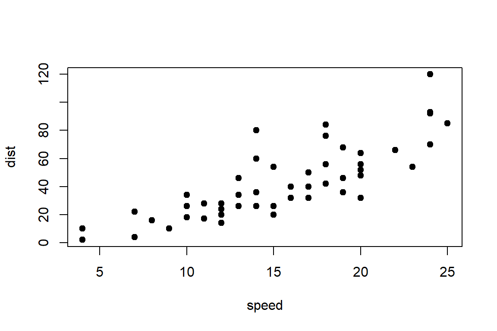
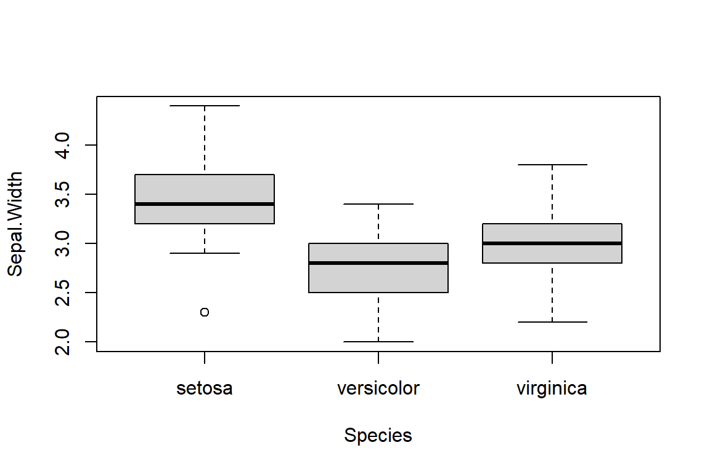

summary(cars) speed dist
Min. : 4.0 Min. : 2.00
1st Qu.:12.0 1st Qu.: 26.00
Median :15.0 Median : 36.00
Mean :15.4 Mean : 42.98
3rd Qu.:19.0 3rd Qu.: 56.00
Max. :25.0 Max. :120.00 This is an R Markdown document. Markdown is a simple formatting syntax for authoring HTML, PDF, and MS Word documents. For more details on using R Markdown see http://rmarkdown.rstudio.com.
When you click the Knit button a document will be generated that includes both content as well as the output of any embedded R code chunks within the document. You can embed an R code chunk like this:
summary(cars) speed dist
Min. : 4.0 Min. : 2.00
1st Qu.:12.0 1st Qu.: 26.00
Median :15.0 Median : 36.00
Mean :15.4 Mean : 42.98
3rd Qu.:19.0 3rd Qu.: 56.00
Max. :25.0 Max. :120.00 You can also embed plots, for example:

Note that the echo = FALSE parameter was added to the code chunk to prevent printing of the R code that generated the plot.
plot(1:10)
plot(cars, pch = 19)
boxplot(Sepal.Width ~ Species, data = iris)


Figure 1
For mange Aar siden levede en Keiser, som holdt saa uhyre meget af
smukke nye Kl\ae der, at han gav alle sine Penge ud for ret at blive
pyntet. Han br\o d sig ikke om sine Soldater, br\o d sig ei om
Comedie eller om at kj\o re i Skoven, uden alene for at vise sine
nye Kl\ae der. Han havde en Kjole for hver Time paa Dagen, og
ligesom man siger om en Konge, han er i Raadet, saa sagde man altid
her: >>Keiseren er i Garderoben!<<~--
Black box optimization is a fundamental problem in many fields, such as engineering, finance, and machine learning. The objective usually, is to find the optimal solution of a complex function that is expensive or impossible to evaluate analytically. \[ x^* = \underset{x\in A}{\arg\min f(x)} \] where \(A\) denotes the search space of \(x\).\ The optimization of \(f(x)\) is a non-trivial task. There are two main methods that are used: (a) derivative-based optimization methods and (b) derivative-free optimization methods. Derivative-based methods require the computation of the derivatives of the objective function. They are typically used when \(f(x)\) is smooth and well-behaved and the derivatives are tractable. On the other hand derivative-free methods are invoked when the function is unknown or when the derivatives are intractable or computationally infeasible to compute. As the black-box functions are usually unknown, often the derivative free based approaches are used to optimize them. The Hyperparameter Optimization (HPO) lies in this category.\\ In HPO, the task involves choosing a set of optimal hyperparameters for a learning algorithm. The performance of these algorithms highly depends on these chosen hyperparameter configurations and may flactuate drastically under different architectures. Hyperparameters are the parameters of a model that control the model’s behavior that are set before training. They include the learning rate, regularization method, optimization algorithm chosen etc. Currently, there are several methods for HPO. The mainly used ones are grid search, random search , and Bayesian optimization . Grid search involves specifying a set of hyperparameters and evaluating the model’s performance for each combination of hyperparameters in a grid then choosing the configuration that yields the best function evaluation. Random search involves randomly sampling hyperparameters from a predefined distribution with a predefined domain and evaluating the model’s performance for each set of hyperparameters then selecting the best configuration. Bayesian optimization involves iteratively constructing a probabilistic model of the objective function by combining the prior distribution of \(f(x)\) with the sample information to obtain the posterior function; which is then optimized according to a chosen acquisition function to obtain the next set of hyperparameters. These is repeated until no further improvement can be done and the final set of configuration is taken to be the optimal setting.